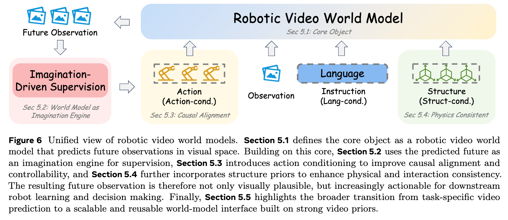
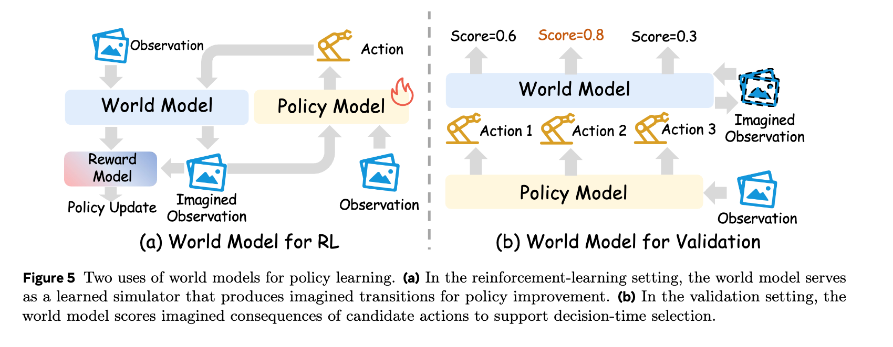
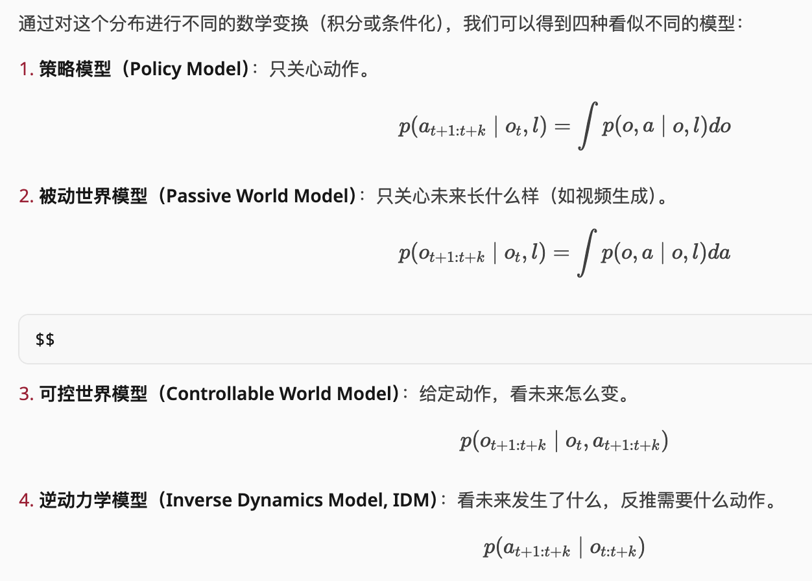
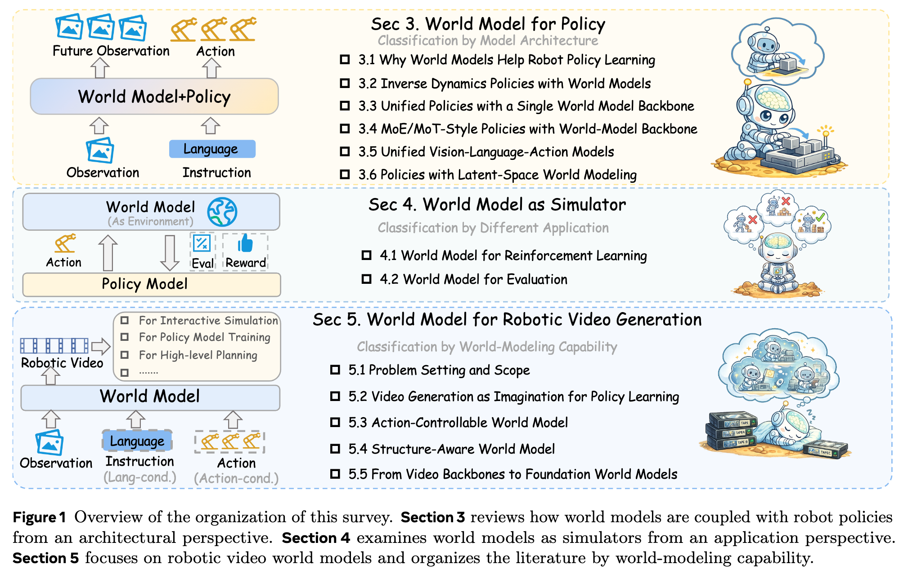
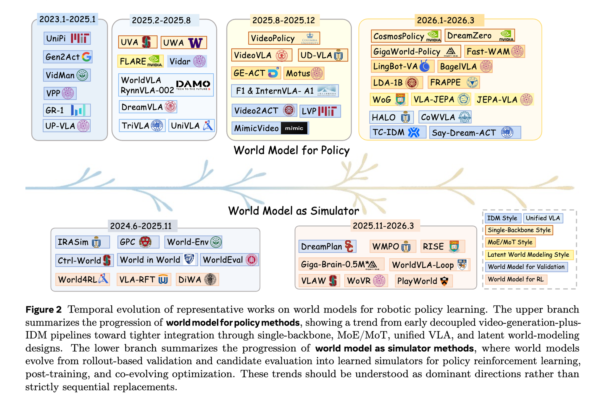
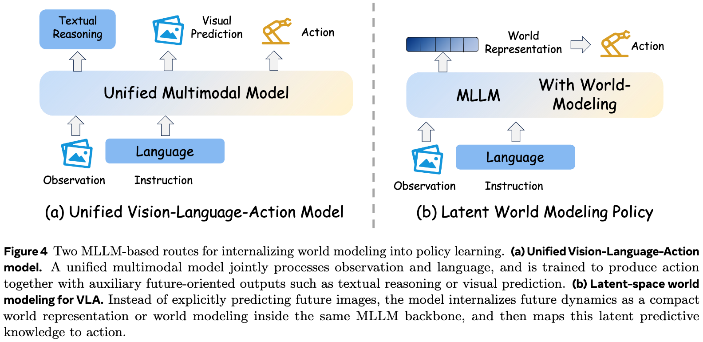
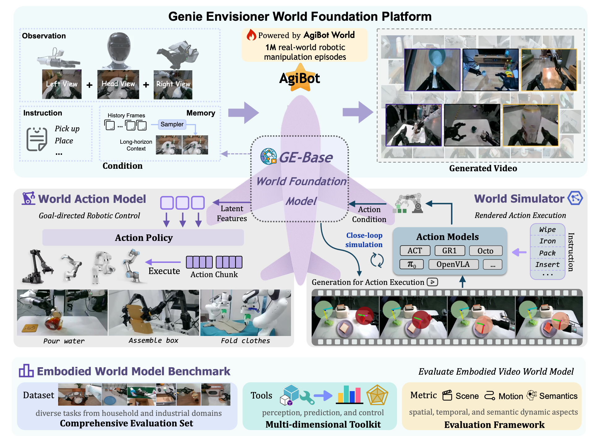

World Model 08
世界模型能做什么
读完具体模型之后，最后回到用途：世界模型可以做 policy learning、planning、learned simulator、 decision-time evaluation、data generation，也可以服务 navigation 和 autonomous driving。
四类常见用途
我的 Notion 里把它简化成 Simulator、Evaluate、VLA、Navigation。更工程化地看， 这四类可以落到 rollout、ranking、training signal 和 task-level planning。


代码视角
当世界模型作为 simulator 或 evaluator，它不一定直接输出动作，而是给 policy update 或 action selection 提供 imagined transition、reward、termination 或 candidate score。
def rank_candidate_actions(obs, instruction, candidates):
scored = []
for action_seq in candidates:
rollout = world_model.rollout(obs, action_seq, instruction)
score = evaluator(rollout.future_obs, rollout.reward, rollout.done)
scored.append((score, action_seq))
return max(scored, key=lambda item: item[0])[1]
def model_based_policy_update(policy, replay):
imagined = world_model.imagine(replay.obs, policy.sample_actions)
return rl_update(policy, imagined.transitions)实现重点
- 用于训练时，世界模型的偏差会进入 policy update，需要短 rollout 或不确定性约束。
- 用于评估时，模型不必完美生成未来，只要能稳定区分候选动作好坏。
- 用于数据生成时，要检查生成分布是否覆盖真实失败模式，否则会放大模拟偏差。





Insight
世界模型不是一个固定组件，而是一种预测接口。它可以放在策略前面、策略里面、策略旁边， 或者作为离线数据引擎。判断路线好不好，要看它在目标任务里到底减少了哪种成本： 标注成本、真实机器人试错成本、推理延迟，还是泛化失败。